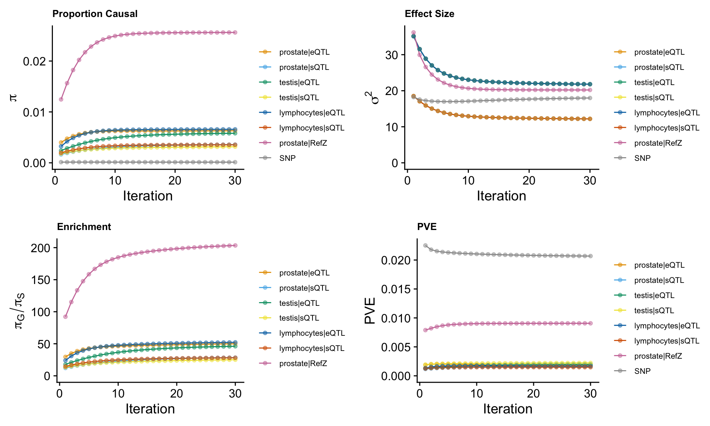
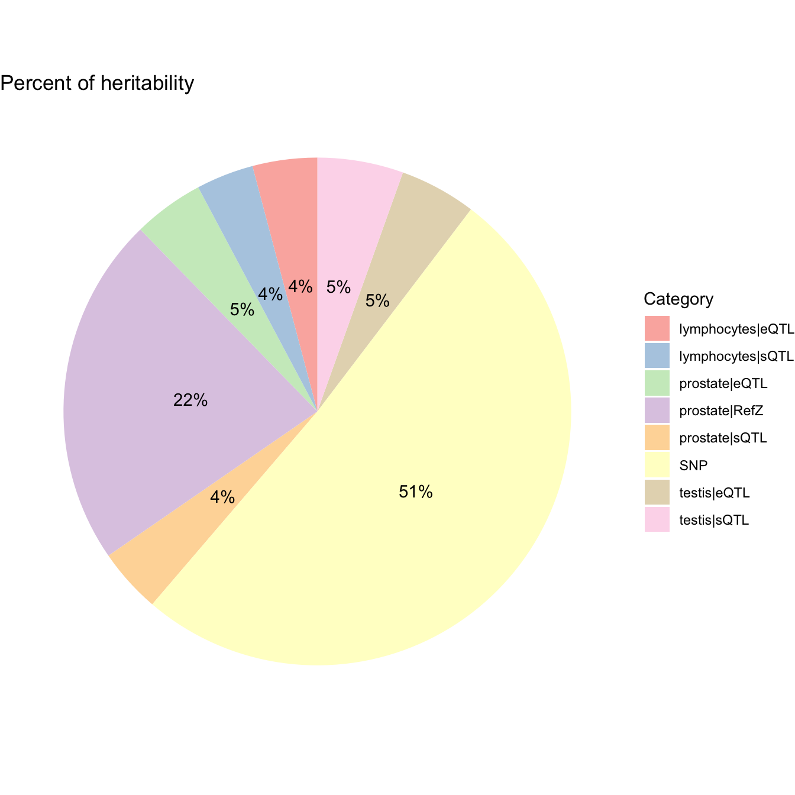
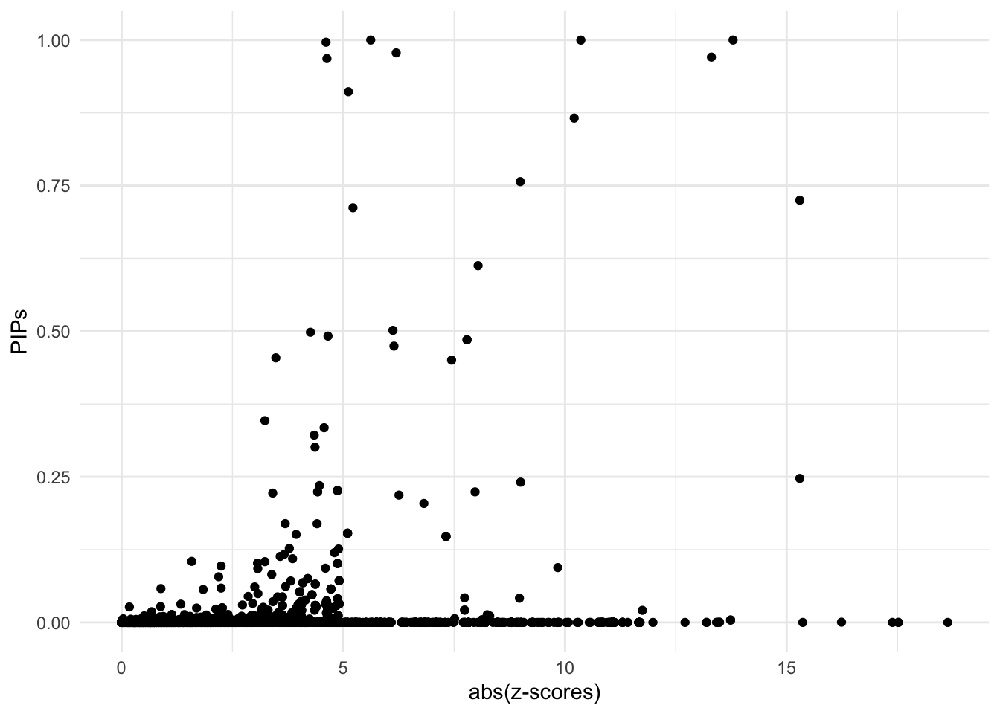
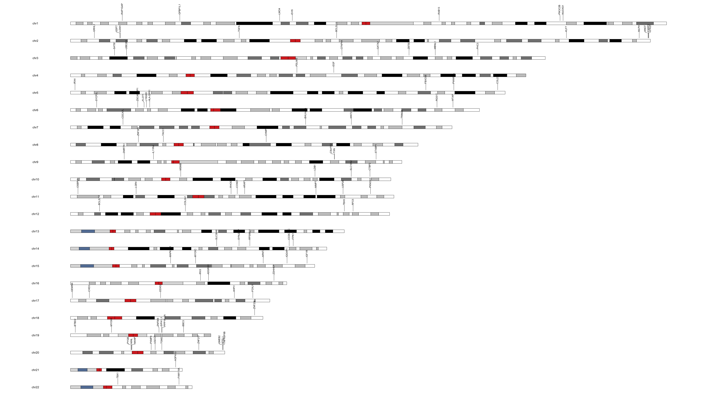
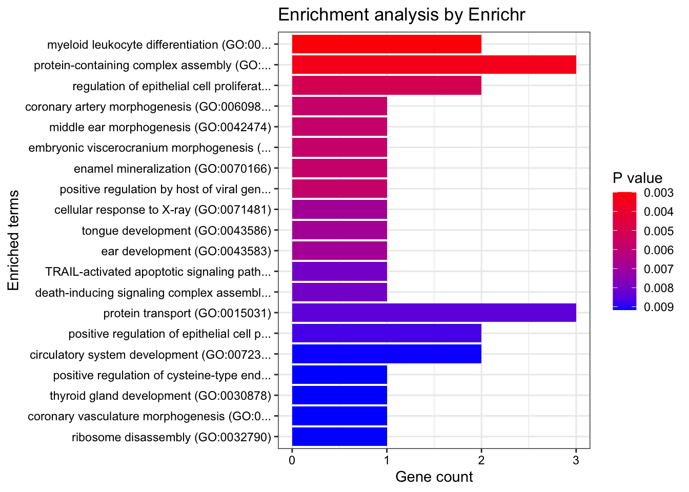
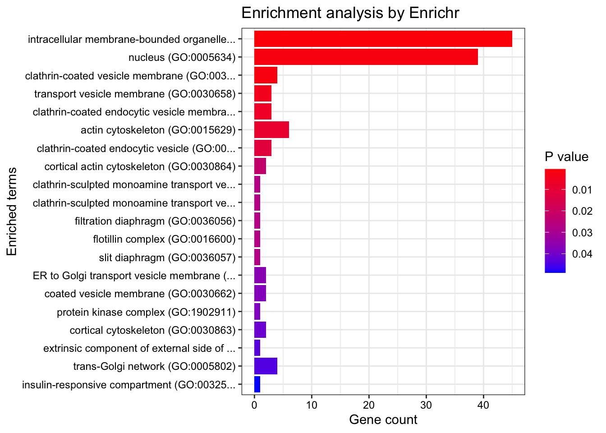
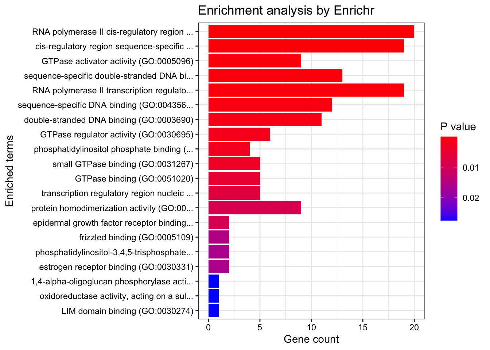

Prostate Cancer ~ Predictdb eQTL&sQTL from Prostate & Testis & Lymphocytes & RefZ prostate cohort
Nina Yifan Yang
2024-10-26
Last updated: 2024-10-26
Checks: 7 0
Knit directory: Multigroup_cTWAS/
This reproducible R Markdown analysis was created with workflowr (version 1.7.1). The Checks tab describes the reproducibility checks that were applied when the results were created. The Past versions tab lists the development history.
Great! Since the R Markdown file has been committed to the Git repository, you know the exact version of the code that produced these results.
Great job! The global environment was empty. Objects defined in the global environment can affect the analysis in your R Markdown file in unknown ways. For reproduciblity it’s best to always run the code in an empty environment.
The command set.seed(20241004) was run prior to running
the code in the R Markdown file. Setting a seed ensures that any results
that rely on randomness, e.g. subsampling or permutations, are
reproducible.
Great job! Recording the operating system, R version, and package versions is critical for reproducibility.
Nice! There were no cached chunks for this analysis, so you can be confident that you successfully produced the results during this run.
Great job! Using relative paths to the files within your workflowr project makes it easier to run your code on other machines.
Great! You are using Git for version control. Tracking code development and connecting the code version to the results is critical for reproducibility.
The results in this page were generated with repository version 387d920. See the Past versions tab to see a history of the changes made to the R Markdown and HTML files.
Note that you need to be careful to ensure that all relevant files for
the analysis have been committed to Git prior to generating the results
(you can use wflow_publish or
wflow_git_commit). workflowr only checks the R Markdown
file, but you know if there are other scripts or data files that it
depends on. Below is the status of the Git repository when the results
were generated:
Ignored files:
Ignored: .DS_Store
Ignored: .Rhistory
Ignored: analysis/.DS_Store
Ignored: analysis/.Rhistory
Note that any generated files, e.g. HTML, png, CSS, etc., are not included in this status report because it is ok for generated content to have uncommitted changes.
These are the previous versions of the repository in which changes were
made to the R Markdown
(analysis/cTWAS_LD_european_combined_output.Rmd) and HTML
(docs/cTWAS_LD_european_combined_output.html) files. If
you’ve configured a remote Git repository (see
?wflow_git_remote), click on the hyperlinks in the table
below to view the files as they were in that past version.
| File | Version | Author | Date | Message |
|---|---|---|---|---|
| Rmd | 387d920 | yy896 | 2024-10-26 | UPDATED RESULTS |
| html | 0ada571 | yy896 | 2024-10-26 | Build site. |
| Rmd | af3529d | yy896 | 2024-10-26 | Updated Results |
| html | 0a7303b | yy896 | 2024-10-21 | Build site. |
| Rmd | 3e3c45f | yy896 | 2024-10-21 | Update TEST RUN |
| html | 6cc8b8c | yy896 | 2024-10-17 | Build site. |
| Rmd | bd0a6f3 | yy896 | 2024-10-17 | Update TEST RUN |
| html | 7e4a02a | yy896 | 2024-10-17 | Build site. |
| Rmd | f68bc7a | yy896 | 2024-10-17 | Updated TEST RUN |
| html | b6b2e9d | yy896 | 2024-10-17 | Build site. |
| Rmd | b8000e9 | yy896 | 2024-10-17 | Updated TEST RUN |
| html | b53f41c | yy896 | 2024-10-16 | Build site. |
| Rmd | cea5fa5 | yy896 | 2024-10-16 | Update TEST RUN |
Here presenting a cTWAS results report based on real data analysis. The analyzed trait is prostate cancer, the prediction models are Prostate & Testis & Lymphocytes gene expression and splicing models trained on GTEx v8 in the PredictDB format, and RefZ FUSION weights expression data under NIH accession number phs000985.v2.p1.
Analysis Settings
Input Data
- GWAS Z-scores
The summary statistics for prostate cancer are downloaded from https://www.ebi.ac.uk/gwas/downloads/summary-statistics, using dataset ID: GCST90274714.
The sample size is
[1] "gwas_n = 726828"- Prediction models
The prediction models used in this analysis are prostate & testis & lymphocytes gene expression and splicing models, trained on GTEx v8 in the PredictDB format. These models can be downloaded from https://predictdb.org/post/2021/07/21/gtex-v8-models-on-eqtl-and-sqtl/. The RefZ weights model can be downloaded from https://www.ncbi.nlm.nih.gov/projects/gap/cgi-bin/study.cgi?study_id=phs000985.v2.p1.
- Reference data
We did include ukb38 whole genome LD reference in the analysis.
Data processing and harmonization
We map the reference SNPs to regions following the instructions from the cTWAS tutorial.
When processing z-scores, we exclude multi-allelic and
strand-ambiguous variants by setting
drop_multiallelic = TRUE and
drop_strand_ambig = TRUE.
The process can be divided into steps below, users can expand the code snippets below to view the exact code used.
- Input and output settings
weight_files <- c("/project2/xinhe/shared_data/multigroup_ctwas/weights/expression_models/expression_Prostate.db",
"/project2/xinhe/shared_data/multigroup_ctwas/weights/splicing_models/splicing_Prostate.db",
"/project2/xinhe/shared_data/multigroup_ctwas/weights/expression_models/expression_Testis.db",
"/project2/xinhe/shared_data/multigroup_ctwas/weights/splicing_models/splicing_Testis.db",
"/project2/xinhe/shared_data/multigroup_ctwas/weights/expression_models/expression_Cells_EBV-transformed_lymphocytes.db",
"/project2/xinhe/shared_data/multigroup_ctwas/weights/splicing_models/splicing_Cells_EBV-transformed_lymphocytes.db")
z_snp <- vroom::vroom("/project2/xinhe/yifany/GCST90274714.mod.tsv.gz", col_names = TRUE, show_col_types = FALSE)
z_snp$Z <- z_snp$beta / z_snp$standard_error
# gwas_n <- as.numeric(names(sort(table(z_snp$base_pair_location), decreasing = TRUE)[1]))
# cat("gwas_n =", gwas_n, "\n")
gwas_n <- 726828
z_snp <- z_snp[, c("rsid", "other_allele", "effect_allele", "Z")]
colnames(z_snp) <- c("id", "A1", "A2", "z")
region_file <- system.file("extdata/ldetect", "EUR.b38.ldetect.regions.RDS", package = "ctwas")
region_info <- readRDS(region_file)
# output dir
outputdir <- "/project/xinhe/yifany/multigroup_cTWAS"
dir.create(outputdir, showWarnings=F, recursive=T)
# Number of cores
ncore <- 5- Preprocessing GWAS
### Preprocess SNP_map and LD_map
genome_version <- "b38"
region_file <- system.file("extdata/ldetect", paste0("EUR.", genome_version, ".ldetect.regions.RDS"), package = "ctwas")
region_info <- readRDS(region_file)
LD_dir <- "/project2/mstephens/wcrouse/UKB_LDR_0.1"
LD_filestem <- sprintf("ukb_%s_0.1_chr%s.R_snp.%s_%s", genome_version, region_info$chrom, region_info$start, region_info$stop)
region_metatable <- region_info
region_metatable$LD_file <- file.path(LD_dir, paste0(LD_filestem, ".RDS"))
region_metatable$SNP_file <- file.path(LD_dir, paste0(LD_filestem, ".Rvar"))
res <- create_snp_LD_map(region_metatable)
region_info <- res$region_info
snp_map <- res$snp_map
LD_map <- res$LD_map
z_snp <- preprocess_z_snp(z_snp, snp_map,
drop_multiallelic = TRUE,
drop_strand_ambig = TRUE)- Preprocessing weights
weights_prostate_expression <- preprocess_weights(weight_files[1],
region_info,
gwas_snp_ids = z_snp$id,
snp_map = snp_map,
LD_map = LD_map,
type = "eQTL",
context = "prostate",
weight_format = "PredictDB",
drop_strand_ambig = TRUE,
scale_predictdb_weights = TRUE,
load_predictdb_LD = FALSE,
filter_protein_coding_genes = TRUE,
ncore = ncore)
weights_prostate_splicing <- preprocess_weights(weight_files[2],
region_info,
gwas_snp_ids = z_snp$id,
snp_map = snp_map,
LD_map = LD_map,
type = "sQTL",
context = "prostate",
weight_format = "PredictDB",
drop_strand_ambig = TRUE,
scale_predictdb_weights = TRUE,
load_predictdb_LD = FALSE,
filter_protein_coding_genes = TRUE,
ncore = ncore)
weights_testis_expression <- preprocess_weights(weight_files[3],
region_info,
gwas_snp_ids = z_snp$id,
snp_map = snp_map,
LD_map = LD_map,
type = "eQTL",
context = "testis",
weight_format = "PredictDB",
drop_strand_ambig = TRUE,
scale_predictdb_weights = TRUE,
load_predictdb_LD = FALSE,
filter_protein_coding_genes = TRUE,
ncore = ncore)
weights_testis_splicing <- preprocess_weights(weight_files[4],
region_info,
gwas_snp_ids = z_snp$id,
snp_map = snp_map,
LD_map = LD_map,
type = "sQTL",
context = "testis",
weight_format = "PredictDB",
drop_strand_ambig = TRUE,
scale_predictdb_weights = TRUE,
load_predictdb_LD = FALSE,
filter_protein_coding_genes = TRUE,
ncore = ncore)
weights_lymphocytes_expression <- preprocess_weights(weight_files[5],
region_info,
gwas_snp_ids = z_snp$id,
snp_map = snp_map,
LD_map = LD_map,
type = "eQTL",
context = "lymphocytes",
weight_format = "PredictDB",
drop_strand_ambig = TRUE,
scale_predictdb_weights = TRUE,
load_predictdb_LD = FALSE,
filter_protein_coding_genes = TRUE,
ncore = ncore)
weights_lymphocytes_splicing <- preprocess_weights(weight_files[6],
region_info,
gwas_snp_ids = z_snp$id,
snp_map = snp_map,
LD_map = LD_map,
type = "sQTL",
context = "lymphocytes",
weight_format = "PredictDB",
drop_strand_ambig = TRUE,
scale_predictdb_weights = TRUE,
load_predictdb_LD = FALSE,
filter_protein_coding_genes = TRUE,
ncore = ncore)
weights_RefZ_prostate <- preprocess_weights("/project2/xinhe/yifany/MAYO/weights",
region_info,
gwas_snp_ids = z_snp$id,
snp_map = snp_map,
LD_map = LD_map,
type = "RefZ",
context = "prostate",
weight_format = "FUSION",
fusion_method = "lasso",
fusion_genome_version = "b38",
top_n_snps = NULL,
drop_strand_ambig = TRUE,
filter_protein_coding_genes = FALSE,
scale_predictdb_weights = FALSE,
load_predictdb_LD = FALSE,
ncore = ncore)
weights <- c(
weights_prostate_expression,
weights_prostate_splicing,
weights_testis_expression,
weights_testis_splicing,
weights_lymphocytes_expression,
weights_lymphocytes_splicing,
weights_RefZ_prostate)Running cTWAS analysis
We use the ctwas main function ctwas_sumstats to run the
cTWAS analysis with LD. For more details on this function, refer to the
cTWAS tutorial: https://xinhe-lab.github.io/multigroup_ctwas/articles/running_ctwas_analysis.html
Users can expand the code snippets below to view the exact code used.
thin <- 0.1
maxSNP <- 20000
ctwas_res <- ctwas_sumstats(z_snp,
weights,
region_info,
LD_map,
snp_map,
thin = thin,
maxSNP = maxSNP,
group_prior_var_structure = "shared_type",
filter_L = TRUE,
ncore = ncore,
save_cor = TRUE,
cor_dir = file.path(outputdir, "cor_matrix"))Parameter estimation
ctwas_res is the object contains the outputs of
cTWAS
We extract the estimated parameters by
param <- ctwas_res$param
We make plots using the function
make_convergence_plots(param, gwas_n) to see how estimated
parameters converge during the execution of the program:

These plots show the estimated prior inclusion probability, prior effect size variance, enrichment and proportion of variance explained (PVE) over the iterations of parameter estimation. The enrichment is defined as the ratio of the prior inclusion probability of molecular traits over the prior inclusion probability of variants. We generally expect molecular traits to have higher prior inclusion probability than variants. Enrichment values typically range from 20 - 100 for expression traits.
Then, we use summarize_param(param, gwas_n) to obtain
estimated parameters (from the last iteration) and to compute the PVE by
variants and molecular traits.
[1] "The number of genes/introns/SNPs used in the analysis is:" prostate|eQTL prostate|sQTL testis|eQTL testis|sQTL
9693 27939 11362 41889
lymphocytes|eQTL lymphocytes|sQTL prostate|RefZ SNP
8478 24989 12731 6637240 ctwas_parameters$prop_heritability contains the
proportion of heritability mediated by molecular traits and variants, we
visualize it using pie chart.
ctwas_parameters <- summarize_param(param, gwas_n)
data <- data.frame(
category = names(ctwas_parameters$prop_heritability),
percentage = ctwas_parameters$prop_heritability
)
# Calculate percentage labels for the chart
data$percentage_label <- paste0(round(data$percentage * 100, 1), "%")
ggplot(data, aes(x = "", y = percentage, fill = category)) +
geom_bar(stat = "identity", width = 1) +
coord_polar("y", start = 0) +
theme_void() + # Remove background and axes
geom_text(aes(label = percentage_label),
position = position_stack(vjust = 0.5)) +
scale_fill_brewer(palette = "Pastel1") +
labs(fill = "Category") +
ggtitle("Percent of heritability")
Diagnosis plots
For all genes analyzed, we compare the z-scores and fine-mapping PIPs”
ggplot(data = finemap_res[finemap_res$type!="SNP",], aes(x = abs(z), y = susie_pip)) +
geom_point() +
labs(x = "abs(z-scores)", y = "PIPs") +
theme_minimal()
Fine-mapping results
We process the fine-mapping results here.
We first add gene annotations to cTWAS results.
mapping_table is a combination of expression, splicing
models and RefZ expression data.
finemap_res <- anno_finemap_res(finemap_res,
snp_map = snp_map,
mapping_table = mapping_table,
add_gene_annot = TRUE,
map_by = "molecular_id",
drop_unmapped = TRUE,
add_position = TRUE,
use_gene_pos = "mid")The annotated fine-mapping results, ones within credible sets are shown
finemap_res_show <- subset(finemap_res, group != "SNP" & gene_type == "protein_coding" & susie_pip > 0.8 & !is.na(cs))
DT::datatable(finemap_res_show,caption = htmltools::tags$caption( style = 'caption-side: topleft; text-align = left; color:black;','The annotated fine-mapping results, ones within credible sets are shown'),options = list(pageLength = 5) )Next, we compute gene PIPs across different types of molecular traits.
Gene PIPs, only genes within credible sets are shown
susie_alpha_res <- anno_susie_alpha_res(susie_alpha_res,
mapping_table = mapping_table,
map_by = "molecular_id",
drop_unmapped = TRUE)combined_pip_by_group <- combine_gene_pips(susie_alpha_res,
group_by = "gene_name",
by = "group",
method = "combine_cs",
filter_cs = TRUE,
include_cs_id = TRUE)
combined_pip_table <- subset(combined_pip_by_group, combined_pip > 0.8)
DT::datatable(combined_pip_table)Ideogram

GSEA-Gene Ontology
dbs <- c("GO_Biological_Process_2021", "GO_Cellular_Component_2021", "GO_Molecular_Function_2021")
genes <- combined_pip_by_group$gene_name[combined_pip_by_group$combined_pip >0.8]
#number of genes for gene set enrichment
sprintf("The number of genes used in enrichment analysis = %s", length(genes))[1] "The number of genes used in enrichment analysis = 111"GO_enrichment <- enrichr(genes, dbs)Uploading data to Enrichr... Done.
Querying GO_Biological_Process_2021... Done.
Querying GO_Cellular_Component_2021... Done.
Querying GO_Molecular_Function_2021... Done.
Parsing results... Done.print("GO_Biological_Process_2021")[1] "GO_Biological_Process_2021"db <- "GO_Biological_Process_2021"
df <- GO_enrichment[[db]]
print(plotEnrich(GO_enrichment[[db]]))Warning in plotEnrich(GO_enrichment[[db]]): There are duplicated trimmed names
in the plot, consider increasing the 'numChar' setting.
df <- df[df$Adjusted.P.value<0.05,c("Term", "Overlap", "Adjusted.P.value", "Genes")]
DT::datatable(df,caption = htmltools::tags$caption( style = 'caption-side: topleft; text-align = left; color:black;','Enriched pathways from GO_Biological_Process_2021'),options = list(pageLength = 5) )print("GO_Cellular_Component_2021")[1] "GO_Cellular_Component_2021"db <- "GO_Cellular_Component_2021"
df <- GO_enrichment[[db]]
print(plotEnrich(GO_enrichment[[db]]))Warning in plotEnrich(GO_enrichment[[db]]): There are duplicated trimmed names
in the plot, consider increasing the 'numChar' setting.
df <- df[df$Adjusted.P.value<0.05,c("Term", "Overlap", "Adjusted.P.value", "Genes")]
DT::datatable(df,caption = htmltools::tags$caption( style = 'caption-side: topleft; text-align = left; color:black;','Enriched pathways from GO_Cellular_Component_2021'),options = list(pageLength = 5) )print("GO_Molecular_Function_2021")[1] "GO_Molecular_Function_2021"db <- "GO_Molecular_Function_2021"
df <- GO_enrichment[[db]]
print(plotEnrich(GO_enrichment[[db]]))
df <- df[df$Adjusted.P.value<0.05,c("Term", "Overlap", "Adjusted.P.value", "Genes")]
DT::datatable(df,caption = htmltools::tags$caption( style = 'caption-side: topleft; text-align = left; color:black;','Enriched pathways from GO_Molecular_Function_2021'),options = list(pageLength = 5) )GSEA msigdb database


Locus plots (ONLY showing top 10 here)
make_locusplot(finemap_res,
region_id = "6_30830391_31603441",
ens_db = ens_db,
weights = weights,
highlight_pip = 0.8,
filter_protein_coding_genes = TRUE,
filter_cs = TRUE,
color_pval_by = "cs",
color_pip_by = "cs")2024-10-26 09:34:33.968996 INFO::Limit to protein coding genes
2024-10-26 09:34:33.976178 INFO::focal id: LY6G6D|prostate_RefZ
2024-10-26 09:34:33.981236 INFO::focal molecular trait: LY6G6D prostate RefZ
2024-10-26 09:34:33.981699 INFO::Range of locus: chr6:29888246-31603254chromosome 6, position 29888246 to 316032549952 SNPs/datapoints2024-10-26 09:34:34.231 INFO::focal molecular trait QTL positions: 31276008
2024-10-26 09:34:34.249883 INFO::Limit PIPs to credible setsWarning: ggrepel: 350 unlabeled data points (too many overlaps). Consider
increasing max.overlaps
make_locusplot(finemap_res,
region_id = "20_24737088_25363595",
ens_db = ens_db,
weights = weights,
highlight_pip = 0.8,
filter_protein_coding_genes = TRUE,
filter_cs = TRUE,
color_pval_by = "cs",
color_pip_by = "cs")2024-10-26 09:34:35.689337 INFO::Limit to protein coding genes
2024-10-26 09:34:35.689923 INFO::focal id: NINL|prostate_RefZ
2024-10-26 09:34:35.690182 INFO::focal molecular trait: NINL prostate RefZ
2024-10-26 09:34:35.690415 INFO::Range of locus: chr20:24736988-25363553chromosome 20, position 24736988 to 253635532130 SNPs/datapoints2024-10-26 09:34:35.796839 INFO::focal molecular trait QTL positions: 25221872,25295661
2024-10-26 09:34:35.810241 INFO::Limit PIPs to credible setsWarning: ggrepel: 114 unlabeled data points (too many overlaps). Consider
increasing max.overlaps
make_locusplot(finemap_res,
region_id = "2_240620667_241210506",
ens_db = ens_db,
weights = weights,
highlight_pip = 0.8,
filter_protein_coding_genes = TRUE,
filter_cs = TRUE,
color_pval_by = "cs",
color_pip_by = "cs")2024-10-26 09:34:36.538157 INFO::Limit to protein coding genes
2024-10-26 09:34:36.538731 INFO::focal id: intron_2_241195845_241199316|prostate_sQTL
2024-10-26 09:34:36.538982 INFO::focal molecular trait: ANO7 prostate sQTL
2024-10-26 09:34:36.53922 INFO::Range of locus: chr2:240618245-241608572chromosome 2, position 240618245 to 2416085722079 SNPs/datapoints2024-10-26 09:34:36.633712 INFO::focal molecular trait QTL positions: 241195850,241202304
2024-10-26 09:34:36.646967 INFO::Limit PIPs to credible setsWarning: ggrepel: 122 unlabeled data points (too many overlaps). Consider
increasing max.overlaps
make_locusplot(finemap_res,
region_id = "5_982137_2132328",
ens_db = ens_db,
weights = weights,
highlight_pip = 0.8,
filter_protein_coding_genes = TRUE,
filter_cs = TRUE,
color_pval_by = "cs",
color_pip_by = "cs")2024-10-26 09:34:37.219707 INFO::Limit to protein coding genes
2024-10-26 09:34:37.22036 INFO::focal id: IRX4|prostate_RefZ
2024-10-26 09:34:37.220647 INFO::focal molecular trait: IRX4 prostate RefZ
2024-10-26 09:34:37.220917 INFO::Range of locus: chr5:293494-2132093chromosome 5, position 293494 to 21320934552 SNPs/datapoints2024-10-26 09:34:37.491449 INFO::focal molecular trait QTL positions: 1653722,1730915,1844177,1890280,1890763,1891707,1895715
2024-10-26 09:34:37.504894 INFO::Limit PIPs to credible setsWarning: ggrepel: 80 unlabeled data points (too many overlaps). Consider
increasing max.overlaps
make_locusplot(finemap_res,
region_id = "10_101189482_102620653",
ens_db = ens_db,
weights = weights,
highlight_pip = 0.8,
filter_protein_coding_genes = TRUE,
filter_cs = TRUE,
color_pval_by = "cs",
color_pip_by = "cs")2024-10-26 09:34:38.0519 INFO::Limit to protein coding genes
2024-10-26 09:34:38.052926 INFO::focal id: LDB1|prostate_RefZ
2024-10-26 09:34:38.053194 INFO::focal molecular trait: LDB1 prostate RefZ
2024-10-26 09:34:38.053443 INFO::Range of locus: chr10:101190250-102621720chromosome 10, position 101190250 to 1026217202551 SNPs/datapoints2024-10-26 09:34:38.128083 INFO::focal molecular trait QTL positions: 102103939,102454510,102461782,102516236,102529019,102609566
2024-10-26 09:34:38.141915 INFO::Limit PIPs to credible setsWarning: ggrepel: 219 unlabeled data points (too many overlaps). Consider
increasing max.overlaps
make_locusplot(finemap_res,
region_id = "2_241210506_242147200",
ens_db = ens_db,
weights = weights,
highlight_pip = 0.8,
filter_protein_coding_genes = TRUE,
filter_cs = TRUE,
color_pval_by = "cs",
color_pip_by = "cs")2024-10-26 09:34:39.115208 INFO::Limit to protein coding genes
2024-10-26 09:34:39.115832 INFO::focal id: FARP2|prostate_RefZ
2024-10-26 09:34:39.116086 INFO::focal molecular trait: FARP2 prostate RefZ
2024-10-26 09:34:39.116342 INFO::Range of locus: chr2:241206842-242115497chromosome 2, position 241206842 to 2421154972381 SNPs/datapoints2024-10-26 09:34:39.365338 INFO::focal molecular trait QTL positions: 241222776,241234501,241245223,241345230,241375608,241422182,241493933,241497112,241503095,241526862,241533917,241664954
2024-10-26 09:34:39.378529 INFO::Limit PIPs to credible setsWarning: ggrepel: 252 unlabeled data points (too many overlaps). Consider
increasing max.overlaps
make_locusplot(finemap_res,
region_id = "20_63558827_64333810",
ens_db = ens_db,
weights = weights,
highlight_pip = 0.8,
filter_protein_coding_genes = TRUE,
filter_cs = TRUE,
color_pval_by = "cs",
color_pip_by = "cs")2024-10-26 09:34:40.475542 INFO::Limit to protein coding genes
2024-10-26 09:34:40.476528 INFO::focal id: GMEB2|prostate_RefZ
2024-10-26 09:34:40.47678 INFO::focal molecular trait: GMEB2 prostate RefZ
2024-10-26 09:34:40.477018 INFO::Range of locus: chr20:63558727-64331616chromosome 20, position 63558727 to 643316162610 SNPs/datapoints2024-10-26 09:34:40.545225 INFO::focal molecular trait QTL positions: 63590257,63595728,63599580,63599621,63600989,63602285,63602411,63603699,63605846,63615188,63632195
2024-10-26 09:34:40.558457 INFO::Limit PIPs to credible setsWarning: ggrepel: 281 unlabeled data points (too many overlaps). Consider
increasing max.overlapsWarning: ggrepel: 6 unlabeled data points (too many overlaps). Consider
increasing max.overlapsWarning: ggrepel: 11 unlabeled data points (too many overlaps). Consider
increasing max.overlaps
make_locusplot(finemap_res,
region_id = "11_101460390_104088908",
ens_db = ens_db,
weights = weights,
highlight_pip = 0.8,
filter_protein_coding_genes = TRUE,
filter_cs = TRUE,
color_pval_by = "cs",
color_pip_by = "cs")2024-10-26 09:34:41.474188 INFO::Limit to protein coding genes
2024-10-26 09:34:41.474888 INFO::focal id: MMP7|prostate_RefZ
2024-10-26 09:34:41.4752 INFO::focal molecular trait: MMP7 prostate RefZ
2024-10-26 09:34:41.475506 INFO::Range of locus: chr11:101460301-104087928chromosome 11, position 101460301 to 1040879288426 SNPs/datapoints2024-10-26 09:34:41.585899 INFO::focal molecular trait QTL positions: 102525876,102530930,102532522,102558889,102559274,102559377,102559478,102565692,102567228,102568976,102569109,102569498,102569845,102570196,102570919,102571185,102571456,102749572,102820803
2024-10-26 09:34:41.599296 INFO::Limit PIPs to credible setsWarning: ggrepel: 75 unlabeled data points (too many overlaps). Consider
increasing max.overlapsWarning: ggrepel: 18 unlabeled data points (too many overlaps). Consider
increasing max.overlaps
make_locusplot(finemap_res,
region_id = "20_34225635_36332043",
ens_db = ens_db,
weights = weights,
highlight_pip = 0.8,
filter_protein_coding_genes = TRUE,
filter_cs = TRUE,
color_pval_by = "cs",
color_pip_by = "cs")2024-10-26 09:34:42.382854 INFO::Limit to protein coding genes
2024-10-26 09:34:42.383508 INFO::focal id: ENSG00000101019.21|prostate_eQTL
2024-10-26 09:34:42.38377 INFO::focal molecular trait: UQCC1 prostate eQTL
2024-10-26 09:34:42.384027 INFO::Range of locus: chr20:34225783-36331600chromosome 20, position 34225783 to 363316003869 SNPs/datapoints2024-10-26 09:34:42.513872 INFO::focal molecular trait QTL positions: 35412662
2024-10-26 09:34:42.527326 INFO::Limit PIPs to credible setsWarning: ggrepel: 432 unlabeled data points (too many overlaps). Consider
increasing max.overlaps
make_locusplot(finemap_res,
region_id = "11_68238358_69701362",
ens_db = ens_db,
weights = weights,
highlight_pip = 0.8,
filter_protein_coding_genes = TRUE,
filter_cs = TRUE,
color_pval_by = "cs",
color_pip_by = "cs")2024-10-26 09:34:43.482397 INFO::Limit to protein coding genes
2024-10-26 09:34:43.483031 INFO::focal id: ENSG00000110092.3|lymphocytes_eQTL
2024-10-26 09:34:43.483291 INFO::focal molecular trait: CCND1 lymphocytes eQTL
2024-10-26 09:34:43.483554 INFO::Range of locus: chr11:68238604-69701357chromosome 11, position 68238604 to 697013573847 SNPs/datapoints2024-10-26 09:34:43.56375 INFO::focal molecular trait QTL positions: 69264019,69640683
2024-10-26 09:34:43.578236 INFO::Limit PIPs to credible setsWarning: ggrepel: 148 unlabeled data points (too many overlaps). Consider
increasing max.overlaps
sessionInfo()R version 4.4.1 (2024-06-14)
Platform: aarch64-apple-darwin20
Running under: macOS 15.0.1
Matrix products: default
BLAS: /Library/Frameworks/R.framework/Versions/4.4-arm64/Resources/lib/libRblas.0.dylib
LAPACK: /Library/Frameworks/R.framework/Versions/4.4-arm64/Resources/lib/libRlapack.dylib; LAPACK version 3.12.0
locale:
[1] en_US.UTF-8/en_US.UTF-8/en_US.UTF-8/C/en_US.UTF-8/en_US.UTF-8
time zone: America/New_York
tzcode source: internal
attached base packages:
[1] stats4 stats graphics grDevices utils datasets methods
[8] base
other attached packages:
[1] ReactomePA_1.48.0 ggsci_3.2.0
[3] enrichplot_1.24.4 ggalt_0.4.0
[5] fgsea_1.30.0 msigdb_1.12.0
[7] Seurat_5.1.0 SeuratObject_5.0.2
[9] sp_2.1-4 GO.db_3.19.1
[11] biomaRt_2.60.1 karyoploteR_1.30.0
[13] regioneR_1.36.0 htmltools_0.5.8.1
[15] DT_0.33 enrichR_3.2
[17] EnsDb.Hsapiens.v86_2.99.0 ensembldb_2.28.1
[19] AnnotationFilter_1.28.0 GenomicFeatures_1.56.0
[21] AnnotationDbi_1.66.0 Biobase_2.64.0
[23] GenomicRanges_1.56.2 GenomeInfoDb_1.40.1
[25] IRanges_2.38.1 S4Vectors_0.42.1
[27] BiocGenerics_0.50.0 ctwas_0.4.17
[29] data.table_1.16.2 lubridate_1.9.3
[31] forcats_1.0.0 stringr_1.5.1
[33] dplyr_1.1.4 purrr_1.0.2
[35] readr_2.1.5 tidyr_1.3.1
[37] tibble_3.2.1 ggplot2_3.5.1
[39] tidyverse_2.0.0
loaded via a namespace (and not attached):
[1] R.methodsS3_1.8.2 dichromat_2.0-0.1
[3] progress_1.2.3 gggrid_0.2-0
[5] nnet_7.3-19 goftest_1.2-3
[7] Biostrings_2.72.1 vctrs_0.6.5
[9] spatstat.random_3.3-2 digest_0.6.37
[11] png_0.1-8 git2r_0.35.0
[13] ggrepel_0.9.6 mixsqp_0.3-54
[15] deldir_2.0-4 parallelly_1.38.0
[17] MASS_7.3-61 reshape2_1.4.4
[19] httpuv_1.6.15 qvalue_2.36.0
[21] withr_3.0.1 pgenlibr_0.3.7
[23] ggfun_0.1.7 xfun_0.48
[25] survival_3.7-0 memoise_2.0.1
[27] gson_0.1.0 bamsignals_1.36.0
[29] tidytree_0.4.6 zoo_1.8-12
[31] pbapply_1.7-2 R.oo_1.26.0
[33] logging_0.10-108 Formula_1.2-5
[35] prettyunits_1.2.0 KEGGREST_1.44.1
[37] promises_1.3.0 httr_1.4.7
[39] restfulr_0.0.15 globals_0.16.3
[41] fitdistrplus_1.2-1 rstudioapi_0.17.1
[43] UCSC.utils_1.0.0 miniUI_0.1.1.1
[45] generics_0.1.3 DOSE_3.30.5
[47] reactome.db_1.88.0 base64enc_0.1-3
[49] babelgene_22.9 curl_5.2.3
[51] zlibbioc_1.50.0 ggraph_2.2.1
[53] polyclip_1.10-7 GenomeInfoDbData_1.2.12
[55] SparseArray_1.4.8 xtable_1.8-4
[57] evaluate_1.0.1 S4Arrays_1.4.1
[59] BiocFileCache_2.12.0 hms_1.1.3
[61] LDlinkR_1.4.0 irlba_2.3.5.1
[63] colorspace_2.1-1 filelock_1.0.3
[65] ROCR_1.0-11 reticulate_1.39.0
[67] spatstat.data_3.1-2 magrittr_2.0.3
[69] lmtest_0.9-40 ggtree_3.12.0
[71] later_1.3.2 viridis_0.6.5
[73] lattice_0.22-6 spatstat.geom_3.3-3
[75] future.apply_1.11.2 shadowtext_0.1.4
[77] scattermore_1.2 XML_3.99-0.17
[79] cowplot_1.1.3 matrixStats_1.4.1
[81] RcppAnnoy_0.0.22 Hmisc_5.1-3
[83] pillar_1.9.0 nlme_3.1-166
[85] compiler_4.4.1 RSpectra_0.16-2
[87] stringi_1.8.4 tensor_1.5
[89] SummarizedExperiment_1.34.0 GenomicAlignments_1.40.0
[91] plyr_1.8.9 msigdbr_7.5.1
[93] crayon_1.5.3 abind_1.4-8
[95] BiocIO_1.14.0 gridGraphics_0.5-1
[97] graphlayouts_1.2.0 bit_4.5.0
[99] fastmatch_1.1-4 whisker_0.4.1
[101] codetools_0.2-20 crosstalk_1.2.1
[103] bslib_0.8.0 biovizBase_1.52.0
[105] plotly_4.10.4 mime_0.12
[107] splines_4.4.1 Rcpp_1.0.13
[109] fastDummies_1.7.4 dbplyr_2.5.0
[111] Rttf2pt1_1.3.12 knitr_1.48
[113] blob_1.2.4 utf8_1.2.4
[115] WriteXLS_6.7.0 fs_1.6.4
[117] listenv_0.9.1 checkmate_2.3.2
[119] locuszoomr_0.3.5 ggplotify_0.1.2
[121] Matrix_1.7-1 tzdb_0.4.0
[123] tweenr_2.0.3 pkgconfig_2.0.3
[125] tools_4.4.1 cachem_1.1.0
[127] RSQLite_2.3.7 viridisLite_0.4.2
[129] DBI_1.2.3 graphite_1.50.0
[131] fastmap_1.2.0 rmarkdown_2.28
[133] scales_1.3.0 grid_4.4.1
[135] ica_1.0-3 Rsamtools_2.20.0
[137] sass_0.4.9 patchwork_1.3.0
[139] dotCall64_1.2 VariantAnnotation_1.50.0
[141] graph_1.82.0 RANN_2.6.2
[143] rpart_4.1.23 farver_2.1.2
[145] scatterpie_0.2.4 tidygraph_1.3.1
[147] yaml_2.3.10 workflowr_1.7.1
[149] MatrixGenerics_1.16.0 foreign_0.8-87
[151] rtracklayer_1.64.0 cli_3.6.3
[153] leiden_0.4.3.1 lifecycle_1.0.4
[155] uwot_0.2.2 backports_1.5.0
[157] BiocParallel_1.38.0 timechange_0.3.0
[159] gtable_0.3.6 rjson_0.2.23
[161] ggridges_0.5.6 progressr_0.14.0
[163] ape_5.8 parallel_4.4.1
[165] jsonlite_1.8.9 RcppHNSW_0.6.0
[167] bitops_1.0-9 bit64_4.5.2
[169] Rtsne_0.17 yulab.utils_0.1.7
[171] spatstat.utils_3.1-0 bezier_1.1.2
[173] jquerylib_0.1.4 highr_0.11
[175] GOSemSim_2.30.2 spatstat.univar_3.0-1
[177] R.utils_2.12.3 lazyeval_0.2.2
[179] shiny_1.9.1 proj4_1.0-14
[181] sctransform_0.4.1 rappdirs_0.3.3
[183] glue_1.8.0 spam_2.11-0
[185] httr2_1.0.5 XVector_0.44.0
[187] RCurl_1.98-1.16 treeio_1.28.0
[189] rprojroot_2.0.4 BSgenome_1.72.0
[191] gridExtra_2.3 igraph_2.1.1
[193] extrafontdb_1.0 R6_2.5.1
[195] labeling_0.4.3 cluster_2.1.6
[197] aplot_0.2.3 DelayedArray_0.30.1
[199] tidyselect_1.2.1 ProtGenerics_1.36.0
[201] htmlTable_2.4.3 maps_3.4.2
[203] ggforce_0.4.2 xml2_1.3.6
[205] ash_1.0-15 future_1.34.0
[207] munsell_0.5.1 KernSmooth_2.23-24
[209] htmlwidgets_1.6.4 RColorBrewer_1.1-3
[211] rlang_1.1.4 spatstat.sparse_3.1-0
[213] extrafont_0.19 spatstat.explore_3.3-3
[215] fansi_1.0.6